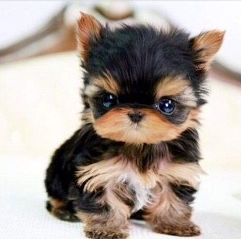
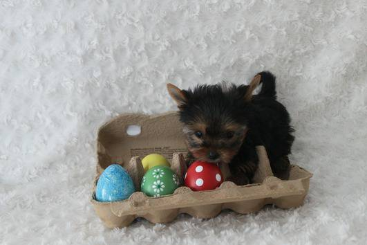

ABOUT US
-
We Raise Tiny Teacup Yorkies
We have raised Yorkies here and more to that adorable teacup Yorkies for sale for more than 12 years. We have worked long and hard on our program and are extremely happy with our progress so far, and we see it only getting better in the future. We are excited to bring to you happy, loving and most of all healthy teacup yorkies for sale.
-
Health Care
Each one of our teacup yorkies for sale have been socialized and well taken care of. We most generally keep our teacup yorkies until they are 9 weeks of age, for the sole reason of making sure that the teacup yorkies are very well socialized but most of all healthy. A healthy pup now means a lifetime of enjoyment of their lives as well as yours. We have made it our sole mission to raise quality teacup yorkies Pups for sale that will bring you a lifetime of happiness.
-
Size
Most generally the teacup yorkie puppies for sale we raise are small in size ranging from 2 to 4 ibs. grown. Our Teacup yorkie puppies for sale have genes that produces what most people refer to as tiny or teacup puppies. These you will find much more expensive than the average size pup, although they are healthy they are much harder to raise, they require more care. If you are interested in a teacup yorkie puppie, please be aware that we keep them until they are much older.As well as we recommend that our puppies go to a home where they will be supervised.
-
Other
We want you to find the teacup yorkie puppies for your family! We feel that if you want to bring a new addition to your family, we want you to be well information about the care and maintenance of your new pup. That is why you will find we have posted several pages on our site to provide you with the information that you will find helpful once you have decided on bringing a new teacup yorkie puppy for sale into your home.
We know it is sometimes confusing when shopping for yorkie puppy, When considering a Yorkie Puppy, there are so many colors to choose from. Yorkie puppy colors are Black and Tan, Black and Gold, Chocolate, Golden, Parti, Chocolate Parti, and Golden Parti.
Featured Topic
- 
Temperament
Intelligence - Above average for canines- generally easy to house train when using proper methods.most are up for exercise or play time any time!
-

Daycare
We offer 24 hour daycare service for your dog. Your pet will be given a luxurious space to run, play and nap. We also make sure your dog is walked 3 times a day .
- 
Travel Options
Air
Cargo
Truck


.jpg)